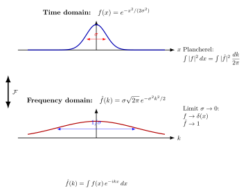

Fourier 变换 — 时间和频率, 位置和动量, 凭什么是同一对象的两种语言?
上一节我们看到了 Heisenberg 不确定关系: 位置算符与动量算符不可交换, $[x,p]=i\hbar$, 因而它们的标准差有下界 $\Delta x\,\Delta p\ge\hbar/2$. 但那只是结论. 更深一层的问题是: 位置波函数 $\psi(x)$ 与动量波函数 $\tilde\psi(p)$, 一个写在位置坐标里, 一个写在动量坐标里, 凭什么我们说它们描述同一个量子态? 它们之间的桥梁是什么?
答案就在 Fourier 早在 1822 年研究热传导时找到的工具 — 把任何函数分解为正弦波的叠加. 位置与动量、时间与频率, 这些看似毫不相干的物理量, 其实是同一个 $L^2$ 函数的两副坐标. Fourier 变换是这两副坐标之间的"翻译器", 也是为数不多的一种等距同构 (isometry): 它保持范数, 翻转微分与乘法, 把卷积变成乘法. 本节我们逐条建立它.
一、从一个声音到一个谱: 把函数分解为正弦波
想象你录下一段单簧管演奏的中央 C, 得到时间序列 $f(t)$, 一个实值光滑函数. 物理直觉告诉我们, 这个声音由一个基频 $\omega_0\approx 2\pi\cdot 261.6\,\mathrm{Hz}$ 加上若干倍频泛音组成 — 也就是说
$$ f(t) = \sum_n c_n \cos(n\omega_0 t + \varphi_n). $$
"分解为正弦波叠加" 这个想法, Fourier 在 1822 年的《Théorie analytique de la chaleur》(《热的解析理论》) 中第一次系统化 — 他用三角级数解一根金属棒的热传导方程 $\partial_t u = \partial_x^2 u$, 其奇迹般的简洁是: 在傅里叶模式 $e^{ikx}$ 下, 二阶微分变成乘以 $-k^2$, 偏微分方程退化为常微分方程. 当年这套方法在巴黎数学界引起了不小的争议 (Lagrange 和 Laplace 都怀疑它的严格性), 直到 19 世纪后半叶 Dirichlet、Riemann、Cantor 才把它的收敛性放在现代分析的根基上.
对一个一般的、非周期的、定义在整条直线上的函数, 离散和 $\sum_n$ 要变成连续积分 $\int dk$. 这就是 Fourier 变换 (相对于周期函数的 Fourier 级数). 我们直接给定义.
定义 (1) [Fourier 变换]. 对于绝对可积函数 $f\in L^1(\mathbb R)$, 它的 Fourier 变换定义为
$$\boxed{\;\hat f(k) := \int_{-\infty}^{\infty} f(x)\, e^{-ikx}\, dx,\;}\tag{1}$$
对应的逆变换是
$$f(x) = \frac{1}{2\pi}\int_{-\infty}^{\infty} \hat f(k)\, e^{ikx}\, dk. \tag{2}$$
这里 $k$ 称为波数 (在物理里, 取决于上下文, 它是空间频率、时间角频率, 或动量除以 $\hbar$). 直观: $\hat f(k)$ 是 $f$ "投影到平面波 $e^{ikx}$ 上的振幅", 而 (2) 把这些振幅按平面波叠回去就重建出 $f$.
关于约定的说明: 系数 $1/(2\pi)$ 放在哪儿、取 $e^{-ikx}$ 还是 $e^{-2\pi ikx}$, 各家有别. QM 里常用对称约定 $\tilde\psi(p) = \frac{1}{\sqrt{2\pi\hbar}}\int\psi(x)e^{-ipx/\hbar}dx$ — 把 $1/\sqrt{2\pi\hbar}$ 平摊到正反变换两侧, 这样 Plancherel 等距没有额外因子. 本节为简洁起见用 (1)/(2) 的非对称约定; 物理上把 $k$ 换成 $p/\hbar$ 即得 QM 公式.
二、$L^2$ 上的 Plancherel 等距: 范数守恒
(1) 中的积分要求 $f\in L^1$, 也就是 $\int|f|dx\lt \infty$. 但物理上我们更关心的是 $L^2$, 即平方可积函数 — 这是 QM 里波函数生活的那个 Hilbert 空间, 因为 $|\psi|^2$ 是概率密度, 它必须可积. 一个自然的问题: 如果 $f\in L^2$, 它的 Fourier 变换还有意义吗? 还在 $L^2$ 里吗?
答案是肯定的, 而且更妙: Fourier 变换在 $L^2$ 上是等距的 — 范数完全守恒.
定理 (3) [Plancherel]. 对任何 $f\in L^2(\mathbb R)$ (经过适当的极限延拓), $\hat f$ 也属于 $L^2$, 并且
$$\int_{-\infty}^{\infty} |f(x)|^2\, dx = \frac{1}{2\pi}\int_{-\infty}^{\infty} |\hat f(k)|^2\, dk. \tag{3}$$
这条等式 1910 年由瑞士数学家 Michel Plancherel 在其博士论文中证明 — 它把"信号能量"在时域与频域上分了相等的两份. 物理上: 一段声音蕴含的总能量, 既可以按时间累计 ($\int|f|^2dt$), 也可以按频率累计 ($\int|\hat f|^2 d\omega/(2\pi)$), 二者必须相等. 量子力学里: 如果 $\psi\in L^2(\mathbb R)$ 是位置波函数, $\tilde\psi$ 是动量波函数 (用对称约定), 那 $\int|\psi|^2 dx = \int|\tilde\psi|^2 dp = 1$ 同时成立 — 总概率 1, 不论你在哪个坐标里量它.
更进一步, Fourier 变换不仅保模长, 还保内积:
$$\langle f, g\rangle_{L^2} = \int \overline{f(x)} g(x)\, dx = \frac{1}{2\pi}\int \overline{\hat f(k)}\, \hat g(k)\, dk = \frac{1}{2\pi}\langle \hat f, \hat g\rangle.$$
把 $1/\sqrt{2\pi}$ 平摊后得到的对称变换 $\mathcal F:L^2\to L^2$ 是一个幺正算符 (unitary operator). 这就是 QM "位置表象/动量表象" 之所以等价的代数核心: 它们是同一个 Hilbert 空间在两组幺正等价的基下的两种坐标.
三、具体计算: 高斯函数的 Fourier 变换

把抽象定义代到一个具体的、可计算到底的例子里. 取
$$f(x) = e^{-x^2/(2\sigma^2)}, \qquad \sigma\gt 0.$$
这是一个 (未归一化的) 标准差为 $\sigma$ 的 Gaussian. 计算 $\hat f$:
$$\hat f(k) = \int_{-\infty}^{\infty} e^{-x^2/(2\sigma^2)} e^{-ikx}\, dx.$$
"配方": 把指数合并为
$$-\frac{x^2}{2\sigma^2} - ikx = -\frac{1}{2\sigma^2}\left[(x + ik\sigma^2)^2 + k^2\sigma^4\right] = -\frac{(x+ik\sigma^2)^2}{2\sigma^2} - \frac{k^2\sigma^2}{2}.$$
所以
$$\hat f(k) = e^{-k^2\sigma^2/2}\int_{-\infty}^{\infty} e^{-(x+ik\sigma^2)^2/(2\sigma^2)}\, dx.$$
右侧的积分, 通过复变路径平移 (因为被积函数 $e^{-z^2/(2\sigma^2)}$ 全纯且在远处迅速衰减, Cauchy 定理告诉我们沿实轴的平移路径和原实轴等价), 等于 $\int_{-\infty}^\infty e^{-y^2/(2\sigma^2)}dy = \sigma\sqrt{2\pi}$ — 经典 Gauss 积分. 所以
$$\boxed{\;\hat f(k) = \sigma\sqrt{2\pi}\; e^{-\sigma^2 k^2/2}.\;} \tag{4}$$
这是一个深刻的事实: Gaussian 的 Fourier 变换还是 Gaussian. 而且, 时域 Gaussian 的宽度是 $\sigma$, 频域 Gaussian 的宽度变成 $1/\sigma$ — 二者互为倒数. 时域上越尖的脉冲 (小 $\sigma$), 在频域上越扁的谱 (大 $1/\sigma$). 这就是不确定性原理在 Fourier 层面上的最干净的化身: 时域宽度乘频域宽度等于一个固定数. 在 QM 里把 $k$ 换成 $p/\hbar$, 就得到 Gauss 波包的 $\Delta x\,\Delta p = \hbar/2$ — 不确定关系的等号情形.
验证 Plancherel. 算左侧
$$\int|f|^2 dx = \int e^{-x^2/\sigma^2}\, dx = \sigma\sqrt\pi.$$
算右侧
$$\frac{1}{2\pi}\int|\hat f|^2 dk = \frac{2\pi\sigma^2}{2\pi}\int e^{-\sigma^2 k^2}dk = \sigma^2 \cdot \frac{\sqrt\pi}{\sigma} = \sigma\sqrt\pi.$$
两侧确实相等, 好. Plancherel 在这个具体例子上一字不差.
四、对偶字典: 微分↔乘法, 卷积↔乘积, 与 $\delta$ 函数
Fourier 变换之所以在物理里无往不利, 是因为它把"难"的运算变"容易"了. 我们抄一份对偶字典 — 这些恒等式都从 (1) 直接做分部积分或换序得到.
(a) 微分变乘法. 假设 $f$ 与 $f'$ 都在 $L^1\cap L^2$ 里, 并在无穷远处衰减. 那
$$\widehat{f'}(k) = \int f'(x) e^{-ikx} dx = \big[f(x)e^{-ikx}\big]_{-\infty}^{\infty} - \int f(x)(-ik)e^{-ikx}dx = ik\,\hat f(k).$$
边界项消失. 即微分算子 $d/dx$ 在 Fourier 变换下被对角化为乘以 $ik$. 这就是 Fourier 在 1822 年发现的"奇迹": 偏微分方程 $\partial_t u = \partial_x^2 u$ 在 $k$ 空间退化成 $\partial_t \hat u = -k^2\hat u$, 一阶常微分方程, 解为 $\hat u(t,k) = \hat u(0,k)e^{-k^2 t}$ — 即时域上的热核卷积. QM 里同样: 哈密顿算符 $\hat H = -(\hbar^2/2m)\partial_x^2$ 在动量表象下是 $p^2/(2m)$, 一个数, 不再是算子. 整个 Schrödinger 方程在动量表象下变成简单的相位演化.
(b) 卷积变乘积. 卷积定义为 $(f*g)(x) = \int f(y)g(x-y)dy$. 那么
$$\widehat{f*g}(k) = \hat f(k)\,\hat g(k).$$
证明: 直接代入定义, 换换积分次序即得. 这条恒等式叫卷积定理, 是数字信号处理 (DSP) 与图像滤波的算法基石: 想做 $n$ 长度的卷积, 直接算 $O(n^2)$; 但若先做 $\mathcal F$ (用 FFT, $O(n\log n)$), 在频域逐点乘 ($O(n)$), 再 $\mathcal F^{-1}$, 总复杂度 $O(n\log n)$. 物理上: 一个 LTI 系统对输入信号的响应是输入与冲激响应的卷积; 在频域下就是简单的 "频谱乘以传递函数".
这条恒等式在 QFT 里有最重要的应用: Feynman 传播子在动量空间中是简单的 $\tilde G_F(k) = i/(k^2-m^2+i\epsilon)$; 在位置空间中要写
$$G_F(x-y) = \int \frac{d^4k}{(2\pi)^4}\, \tilde G_F(k)\, e^{-ik(x-y)}.$$
卷积定理保证: 两个传播子串起来 (位置空间的双重积分), 在动量空间就是两个分式相乘. 卷一第 03 节《Feynman 传播子》里那个 $e^{-ik(x-y)}$ 就是 (2) 的四维版本.
(c) $\delta$ 函数与 Fourier. 反演公式 (2) 形式上代入 $\hat f = 1$ (常数), 得 $f(x) = \int e^{ikx}dk/(2\pi)$. 这积分在普通函数意义下不收敛, 但作为分布 (distribution, 下一节展开) 它定义了一个有限的对象 — Dirac $\delta$:
$$\delta(x) = \frac{1}{2\pi}\int_{-\infty}^{\infty} e^{ikx}\, dk. \tag{5}$$
意思是: 对任何"测试函数" $\varphi$, $\int\delta(x)\varphi(x)dx = \varphi(0)$ — 也就是把 (5) 套进去算出的就是 $\varphi$ 在 0 的值. 这条恒等式在物理里随处可见: 平面波 $e^{ikx}$ 不是 $L^2$ 的合法波函数 (它不归一), 但它们的"超完备基"在 (5) 的意义下满足正交关系 $\int e^{i(k-k')x}dx = 2\pi\delta(k-k')$. QM 里的"动量本征态" $|p\rangle$ 就是这种意义下的"基": 不严格属于 Hilbert 空间, 但作为分布工作良好.
极限的角度看 (5): 取 (4) 中的 $\sigma\to 0$, 时域上 $f$ 趋于 $\delta$ (一个无穷尖的脉冲), 频域上 $\hat f\to\sigma\sqrt{2\pi}$ (在原点附近) 并扩展为常数 $\sqrt{2\pi}\sigma\,e^{-\sigma^2k^2/2}\to 0$. 反过来取 $\sigma\to\infty$, 时域上扁为常数, 频域上窄为 $\delta$. 这是 Plancherel 在极限情形下的姿态: 信息可以全集中在一点 (高时间分辨率), 也可以全分散在一个频率 (高频率分辨率), 但不能两者兼得.
(d) 多维与 Fourier 级数. 公式 (1) 推广到 $\mathbb R^n$ 几乎不变:
$$\hat f(\mathbf k) = \int f(\mathbf x)\, e^{-i\mathbf k\cdot\mathbf x}\, d^n\mathbf x,$$
其中 $\mathbf k\cdot\mathbf x = k_1 x_1 + \cdots + k_n x_n$. 卷一第 17 节《blackbody》里 Planck 推导黑体辐射时, 把空腔中电磁场分解为驻波模式 $\sin(\mathbf k\cdot\mathbf x)$ — 那就是有限体积下的 Fourier 级数 (周期边界把 $\mathbb R$ 上的连续 Fourier 变换换成了 $\mathbb Z$ 上的 Fourier 系数: $f(x)=\sum_n c_n e^{ik_n x}$, $k_n = 2\pi n/L$). 当 $L\to\infty$, $\sum_n\to(L/2\pi)\int dk$, Fourier 级数过渡到 Fourier 变换. 这条"周期 ↔ 离散谱, 整条直线 ↔ 连续谱"的对偶, 是凝聚态、数论、与信号处理共享的语法.
五、物理回响、历史与下一站
物理回响.
- QM 的两表象. 位置波函数 $\psi(x)$ 与动量波函数 $\tilde\psi(p)$ 通过 $\tilde\psi(p) = (2\pi\hbar)^{-1/2}\int\psi(x)e^{-ipx/\hbar}dx$ 相联. Plancherel 让两套描述等价归一; 算符 $\hat x$ 在位置表象是乘 $x$, 在动量表象是 $i\hbar\,\partial/\partial p$ — 微分变乘法的现身. 不确定关系 $\Delta x\,\Delta p\ge\hbar/2$ 在高斯波包上取等号 — 这就是 (4) 里宽度互逆的物理回响.
- QFT 的 Feynman 传播子. 卷一第 03 节《Feynman 传播子》写的 $G_F(x-y) = \int\frac{d^4k}{(2\pi)^4}\,i/(k^2-m^2+i\epsilon)\,e^{-ik(x-y)}$ 就是 (2) 的四维洛伦兹版本. $k^\mu$ 是四动量, 与时空坐标 $x^\mu$ 互为对偶. Fourier 把动量空间的简单分式拉回到位置空间的复杂奇异核.
- Planck 的黑体辐射. 卷一第 17 节《blackbody》里腔体内电磁场分解为驻波模式 — 离散 Fourier 级数, 是把场量量子化的几何起点. $\hbar\omega$ 的"能量子"假设, 正是把每个 Fourier 模式当成独立的量子谐振子.
- FDT 涨落-耗散. 卷二第 23 节《FDT》 把系统对外力的响应函数 $\chi(\omega)$ 与平衡态下的功率谱 $S(\omega)$ 通过 Fourier 关联起来: $S(\omega) = (2\hbar/\pi)(1+1/(e^{\beta\hbar\omega}-1))\,\Im\chi(\omega)$. 时间相关函数 $\langle A(t)A(0)\rangle$ 与功率谱 $S(\omega)$ 是 Fourier 对偶 — 这是 Wiener-Khinchin 定理.
历史. 1822 年 Joseph Fourier 在《Théorie analytique de la chaleur》中提出三角级数解热方程. 当时数学界 (Lagrange、Laplace、Poisson) 怀疑"任意函数都能展开为正弦和"这个断言, 直到 19 世纪 Dirichlet 1829 给出第一个逐点收敛性证明 (针对分段单调函数). 1859 年 Riemann 在他的就职论文中讨论 Fourier 级数的适用性, 顺手发明了 Riemann 积分. 1910 年瑞士数学家 Michel Plancherel 在博士论文中证明了 $L^2$ 上的等距同构 (3); 同年 Frigyes Riesz 与 Ernst Fischer 独立证明 $L^2$ 是完备的, 这是把 Fourier 变换严格地放在 Hilbert 空间上的两块基石. 1927 年 Norbert Wiener 把 Fourier 推广到广义函数与统计信号; 1932 年 von Neumann 在《量子力学的数学基础》中把 Fourier 变换作为位置/动量两表象的幺正等价的代数核心. 1950 年 Laurent Schwartz 创立分布理论, 把 (5) 中的 $\delta$ 与平面波 $e^{ikx}$ 这些原本"不可积"的对象纳入严格框架 — 这是下一节的主题.
下一站. 我们在 (5) 里偷偷写下了 $\delta(x) = \int e^{ikx}dk/(2\pi)$, 但这积分根本不收敛. 这种"形式上有意义, 实际上不是 $L^2$ 函数"的对象在物理里到处都是: $\delta$ 函数的电荷密度、平面波动量本征态、Green 函数的奇异核. 要把它们放在严格的数学框架里, 需要 Schwartz 1950 年发明的分布理论 — 把"函数"的概念扩展到"函数空间上的连续线性泛函". 下一节我们造分布、给 $\delta$ 一个干净的定义, 看 Fourier 变换怎么自然延拓到全部缓增分布上.
小结
Fourier 变换 $\hat f(k) = \int f(x)e^{-ikx}dx$ 是 $L^2(\mathbb R)$ 上的幺正算符 — 它把同一个函数在两组幺正等价的"基"下展开. Plancherel 定理 $\int|f|^2 dx = \int|\hat f|^2 dk/(2\pi)$ 保证范数 (即概率/能量) 守恒. 它把微分翻译成乘以 $ik$, 把卷积翻译成乘积, 把 Gaussian 翻译成 Gaussian — 而且宽度互逆, 直接显示了 $\Delta x\,\Delta p\ge\hbar/2$. 物理上: QM 的位置/动量两表象、QFT 的 Feynman 传播子、Planck 黑体辐射的模式分解、FDT 的功率谱与响应函数, 都是 Fourier 的不同侧面. 历史上: Fourier 1822 年发明它解热方程; Plancherel 1910 年把它等距化到 $L^2$; Schwartz 1950 年用分布把 $\delta$ 函数与平面波纳入严格框架. 下一节我们就走到分布理论, 把 $\delta(x) = \int e^{ikx}dk/(2\pi)$ 这道形式公式放在干净的舞台上.
▲